from tsai.data.external import get_UCR_dataData preprocessing
Functions used to preprocess time series (both X and y).
dsid = 'NATOPS'
X, y, splits = get_UCR_data(dsid, return_split=False)
tfms = [None, Categorize()]
dsets = TSDatasets(X, y, tfms=tfms, splits=splits)ToNumpyCategory
def ToNumpyCategory(
kwargs:VAR_KEYWORD
):
Categorize a numpy batch
t = ToNumpyCategory()
y_cat = t(y)
y_cat[:10]array([3, 2, 2, 3, 2, 4, 0, 5, 2, 1])test_eq(t.decode(tensor(y_cat)), y)
test_eq(t.decode(np.array(y_cat)), y)OneHot
def OneHot(
n_classes:NoneType=None, kwargs:VAR_KEYWORD
):
One-hot encode/ decode a batch
oh_encoder = OneHot()
y_cat = ToNumpyCategory()(y)
oht = oh_encoder(y_cat)
oht[:10]array([[0., 0., 0., 1., 0., 0.],
[0., 0., 1., 0., 0., 0.],
[0., 0., 1., 0., 0., 0.],
[0., 0., 0., 1., 0., 0.],
[0., 0., 1., 0., 0., 0.],
[0., 0., 0., 0., 1., 0.],
[1., 0., 0., 0., 0., 0.],
[0., 0., 0., 0., 0., 1.],
[0., 0., 1., 0., 0., 0.],
[0., 1., 0., 0., 0., 0.]])n_classes = 10
n_samples = 100
t = torch.randint(0, n_classes, (n_samples,))
oh_encoder = OneHot()
oht = oh_encoder(t)
test_eq(oht.shape, (n_samples, n_classes))
test_eq(torch.argmax(oht, dim=-1), t)
test_eq(oh_encoder.decode(oht), t)n_classes = 10
n_samples = 100
a = np.random.randint(0, n_classes, (n_samples,))
oh_encoder = OneHot()
oha = oh_encoder(a)
test_eq(oha.shape, (n_samples, n_classes))
test_eq(np.argmax(oha, axis=-1), a)
test_eq(oh_encoder.decode(oha), a)TSNan2Value
def TSNan2Value(
value:int=0, median:bool=False, by_sample_and_var:bool=True, sel_vars:NoneType=None
):
Replaces any nan values by a predefined value or median
o = TSTensor(torch.randn(16, 10, 100))
o[0,0] = float('nan')
o[o > .9] = float('nan')
o[[0,1,5,8,14,15], :, -20:] = float('nan')
nan_vals1 = torch.isnan(o).sum()
o2 = Pipeline(TSNan2Value(), split_idx=0)(o.clone())
o3 = Pipeline(TSNan2Value(median=True, by_sample_and_var=True), split_idx=0)(o.clone())
o4 = Pipeline(TSNan2Value(median=True, by_sample_and_var=False), split_idx=0)(o.clone())
nan_vals2 = torch.isnan(o2).sum()
nan_vals3 = torch.isnan(o3).sum()
nan_vals4 = torch.isnan(o4).sum()
test_ne(nan_vals1, 0)
test_eq(nan_vals2, 0)
test_eq(nan_vals3, 0)
test_eq(nan_vals4, 0)o = TSTensor(torch.randn(16, 10, 100))
o[o > .9] = float('nan')
o = TSNan2Value(median=True, sel_vars=[0,1,2,3,4])(o)
test_eq(torch.isnan(o[:, [0,1,2,3,4]]).sum().item(), 0)TSStandardize
def TSStandardize(
mean:NoneType=None, std:NoneType=None, by_sample:bool=False, by_var:bool=False, by_step:bool=False,
exc_vars:NoneType=None, eps:float=1e-08, use_single_batch:bool=True, verbose:bool=False, kwargs:VAR_KEYWORD
):
Standardizes batch of type TSTensor
Args: - mean: you can pass a precalculated mean value as a torch tensor which is the one that will be used, or leave as None, in which case it will be estimated using a batch. - std: you can pass a precalculated std value as a torch tensor which is the one that will be used, or leave as None, in which case it will be estimated using a batch. If both mean and std values are passed when instantiating TSStandardize, the rest of arguments won’t be used. - by_sample: if True, it will calculate mean and std for each individual sample. Otherwise based on the entire batch. - by_var: * False: mean and std will be the same for all variables. * True: a mean and std will be be different for each variable. * a list of ints: (like [0,1,3]) a different mean and std will be set for each variable on the list. Variables not included in the list won’t be standardized. * a list that contains a list/lists: (like[0, [1,3]]) a different mean and std will be set for each element of the list. If multiple elements are included in a list, the same mean and std will be set for those variable in the sublist/s. (in the example a mean and std is determined for variable 0, and another one for variables 1 & 3 - the same one). Variables not included in the list won’t be standardized. - by_step: if False, it will standardize values for each time step. - exc_vars: list of variables that won’t be standardized. - eps: it avoids dividing by 0 - use_single_batch: if True a single training batch will be used to calculate mean & std. Else the entire training set will be used.
batch_tfms=[TSStandardize(by_sample=True, by_var=False, verbose=True)]
dls = TSDataLoaders.from_dsets(dsets.train, dsets.valid, bs=128, num_workers=0, batch_tfms=batch_tfms)
xb, yb = next(iter(dls.train))
test_close(xb.mean(), 0, eps=1e-1)
test_close(xb.std(), 1, eps=1e-1)exc_vars = [0, 2, 6, 8, 12]
batch_tfms=[TSStandardize(by_var=True, exc_vars=exc_vars)]
dls = TSDataLoaders.from_dsets(dsets.train, dsets.valid, bs=128, num_workers=0, batch_tfms=batch_tfms)
xb, yb = next(iter(dls.train))
test_eq(len(dls.train.after_batch.fs[0].mean.flatten()), 24)
test_eq(len(dls.train.after_batch.fs[0].std.flatten()), 24)
test_eq(dls.train.after_batch.fs[0].mean.flatten()[exc_vars].cpu(), torch.zeros(len(exc_vars)))
test_eq(dls.train.after_batch.fs[0].std.flatten()[exc_vars].cpu(), torch.ones(len(exc_vars)))
print(dls.train.after_batch.fs[0].mean.flatten().data)
print(dls.train.after_batch.fs[0].std.flatten().data)tensor([ 0.0000, -1.3174, 0.0000, 0.9717, -0.8482, -0.4143, 0.0000, -0.6051,
0.0000, 0.7712, -0.4998, -0.0891, 0.0000, -1.0472, -0.6276, 0.9089,
-0.7086, -0.2944, -0.5601, -1.1696, -0.7547, 0.9302, -0.7802, -0.4191],
device='mps:0')
tensor([1.0000, 0.8939, 1.0000, 0.7512, 1.1591, 0.5480, 1.0000, 0.2655, 1.0000,
0.2345, 0.4046, 0.3385, 1.0000, 0.6486, 0.2714, 0.5249, 0.8650, 0.4436,
0.5869, 0.7779, 0.3098, 0.6660, 1.0147, 0.5118], device='mps:0')from tsai.data.validation import TimeSplitterX_nan = np.random.rand(100, 5, 10)
idxs = random_choice(len(X_nan), int(len(X_nan)*.5), False)
X_nan[idxs, 0] = float('nan')
idxs = random_choice(len(X_nan), int(len(X_nan)*.5), False)
X_nan[idxs, 1, -10:] = float('nan')
batch_tfms = TSStandardize(by_var=True)
dls = get_ts_dls(X_nan, batch_tfms=batch_tfms, splits=TimeSplitter(show_plot=False)(range_of(X_nan)))
test_eq(torch.isnan(dls.after_batch[0].mean).sum(), 0)
test_eq(torch.isnan(dls.after_batch[0].std).sum(), 0)
xb = first(dls.train)[0]
test_ne(torch.isnan(xb).sum(), 0)
test_ne(torch.isnan(xb).sum(), torch.isnan(xb).numel())
batch_tfms = [TSStandardize(by_var=True), Nan2Value()]
dls = get_ts_dls(X_nan, batch_tfms=batch_tfms, splits=TimeSplitter(show_plot=False)(range_of(X_nan)))
xb = first(dls.train)[0]
test_eq(torch.isnan(xb).sum(), 0)batch_tfms=[TSStandardize(by_sample=True, by_var=False, verbose=False)]
dls = TSDataLoaders.from_dsets(dsets.train, dsets.valid, bs=128, num_workers=0, after_batch=batch_tfms)
xb, yb = next(iter(dls.train))
test_close(xb.mean(), 0, eps=1e-1)
test_close(xb.std(), 1, eps=1e-1)
xb, yb = next(iter(dls.valid))
test_close(xb.mean(), 0, eps=1e-1)
test_close(xb.std(), 1, eps=1e-1)tfms = [None, TSClassification()]
batch_tfms = TSStandardize(by_sample=True)
dls = get_ts_dls(X, y, splits=splits, tfms=tfms, batch_tfms=batch_tfms, bs=[64, 128], inplace=True)
xb, yb = dls.train.one_batch()
test_close(xb.mean(), 0, eps=1e-1)
test_close(xb.std(), 1, eps=1e-1)
xb, yb = dls.valid.one_batch()
test_close(xb.mean(), 0, eps=1e-1)
test_close(xb.std(), 1, eps=1e-1)tfms = [None, TSClassification()]
batch_tfms = TSStandardize(by_sample=True, by_var=False, verbose=False)
dls = get_ts_dls(X, y, splits=splits, tfms=tfms, batch_tfms=batch_tfms, bs=[64, 128], inplace=False)
xb, yb = dls.train.one_batch()
test_close(xb.mean(), 0, eps=1e-1)
test_close(xb.std(), 1, eps=1e-1)
xb, yb = dls.valid.one_batch()
test_close(xb.mean(), 0, eps=1e-1)
test_close(xb.std(), 1, eps=1e-1)TSNormalize
def TSNormalize(
min:NoneType=None, max:NoneType=None, range:tuple=(-1, 1), by_sample:bool=False, by_var:bool=False,
by_step:bool=False, clip_values:bool=True, use_single_batch:bool=True, verbose:bool=False, kwargs:VAR_KEYWORD
):
Normalizes batch of type TSTensor
NumpyTensor.mul_max
def mul_max(
x:torch.Tensor | TSTensor | NumpyTensor, axes:tuple=(), keepdim:bool=False
):
Call self as a function.
TSTensor.mul_max
def mul_max(
x:torch.Tensor | TSTensor | NumpyTensor, axes:tuple=(), keepdim:bool=False
):
Call self as a function.
Tensor.mul_max
def mul_max(
x:torch.Tensor | TSTensor | NumpyTensor, axes:tuple=(), keepdim:bool=False
):
Call self as a function.
NumpyTensor.mul_min
def mul_min(
x:torch.Tensor | TSTensor | NumpyTensor, axes:tuple=(), keepdim:bool=False
):
Call self as a function.
TSTensor.mul_min
def mul_min(
x:torch.Tensor | TSTensor | NumpyTensor, axes:tuple=(), keepdim:bool=False
):
Call self as a function.
Tensor.mul_min
def mul_min(
x:torch.Tensor | TSTensor | NumpyTensor, axes:tuple=(), keepdim:bool=False
):
Call self as a function.
batch_tfms = [TSNormalize()]
dls = TSDataLoaders.from_dsets(dsets.train, dsets.valid, bs=128, num_workers=0, after_batch=batch_tfms)
xb, yb = next(iter(dls.train))
assert xb.max() <= 1
assert xb.min() >= -1batch_tfms=[TSNormalize(by_sample=True, by_var=False, verbose=False)]
dls = TSDataLoaders.from_dsets(dsets.train, dsets.valid, bs=128, num_workers=0, after_batch=batch_tfms)
xb, yb = next(iter(dls.train))
assert xb.max() <= 1
assert xb.min() >= -1batch_tfms = [TSNormalize(by_var=[0, [1, 2]], use_single_batch=False, clip_values=False, verbose=False)]
dls = TSDataLoaders.from_dsets(dsets.train, dsets.valid, bs=128, num_workers=0, after_batch=batch_tfms)
xb, yb = next(iter(dls.train))
assert xb[:, [0, 1, 2]].max() <= 1
assert xb[:, [0, 1, 2]].min() >= -1TSStandardizeTuple
def TSStandardizeTuple(
x_mean, x_std, y_mean:NoneType=None, y_std:NoneType=None, eps:float=1e-05
):
Standardizes X (and y if provided)
a, b = TSTensor([1., 2, 3]), TSTensor([4., 5, 6])
mean, std = a.mean(), b.std()
tuple_batch_tfm = TSStandardizeTuple(mean, std)
a_tfmd, b_tfmd = tuple_batch_tfm((a, b))
test_ne(a, a_tfmd)
test_ne(b, b_tfmd)TSCatEncode
def TSCatEncode(
a, sel_var
):
Encodes a variable based on a categorical array
# static input
a = np.random.randint(10, 20, 512)[:, None, None].repeat(10, 1).repeat(28, 2)
b = TSTensor(torch.randint(0, 30, (512,), device='cpu').unsqueeze(-1).unsqueeze(-1).repeat(1, 10, 28))
output = TSCatEncode(a, sel_var=0)(b)
test_eq(0 <= output[:, 0].min() <= len(np.unique(a)), True)
test_eq(0 <= output[:, 0].max() <= len(np.unique(a)), True)
test_eq(output[:, 0], output[:, 0, 0][:, None].repeat(1, 28))
output[:, 0].datatensor([[ 0, 0, 0, ..., 0, 0, 0],
[ 0, 0, 0, ..., 0, 0, 0],
[ 0, 0, 0, ..., 0, 0, 0],
...,
[ 2, 2, 2, ..., 2, 2, 2],
[10, 10, 10, ..., 10, 10, 10],
[ 0, 0, 0, ..., 0, 0, 0]])# non-static input
a = np.random.randint(10, 20, 512)[:, None, None].repeat(10, 1).repeat(28, 2)
b = TSTensor(torch.randint(0, 30, (512, 10, 28), device='cpu'))
output = TSCatEncode(a, sel_var=0)(b)
test_eq(0 <= output[:, 0].min() <= len(np.unique(a)), True)
test_eq(0 <= output[:, 0].max() <= len(np.unique(a)), True)
test_ne(output[:, 0], output[:, 0, 0][:, None].repeat(1, 28))
output[:, 0].datatensor([[ 0, 0, 0, ..., 0, 1, 0],
[ 4, 0, 3, ..., 0, 0, 2],
[ 0, 0, 0, ..., 0, 0, 0],
...,
[ 4, 0, 0, ..., 0, 8, 5],
[ 0, 0, 0, ..., 4, 1, 0],
[ 0, 10, 5, ..., 6, 0, 0]])TSDropFeatByKey
def TSDropFeatByKey(
key_var, # int representing the variable that contains the key information
p, # array of shape (n_keys, n_features, n_steps) representing the probabilities of dropping a feature at a given step for a given key
sel_vars, # int or slice or list of ints or array of ints representing the variables to drop
sel_steps:NoneType=None, # int or slice or list of ints or array of ints representing the steps to drop
kwargs:VAR_KEYWORD
):
Randomly drops selected features at selected steps based with a given probability per feature, step and a key variable
n_devices = 4
key_var = 0
for sel_vars in [1, [1], [1,3,5], slice(3, 5)]:
for sel_steps in [None, -1, 27, [27], [25, 26], slice(10, 20)]:
o = TSTensor(torch.rand(512, 10, 28))
o[:, key_var] = torch.randint(0, n_devices, (512, 28))
n_vars = 1 if isinstance(sel_vars, Integral) else len(sel_vars) if isinstance(sel_vars, list) else sel_vars.stop - sel_vars.start
n_steps = o.shape[-1] if sel_steps is None else 1 if isinstance(sel_steps, Integral) else \
len(sel_steps) if isinstance(sel_steps, list) else sel_steps.stop - sel_steps.start
p = torch.rand(n_devices, n_vars, n_steps) * .5 + .5
output = TSDropFeatByKey(key_var, p, sel_vars, sel_steps)(o)
assert torch.isnan(output).sum((0, 2))[sel_vars].sum() > 0
assert torch.isnan(output).sum((0, 2))[~np.array(np.arange(o.shape[1])[sel_vars])].sum() == 0TSClipOutliers
def TSClipOutliers(
min:NoneType=None, max:NoneType=None, by_sample:bool=False, by_var:bool=False, use_single_batch:bool=False,
verbose:bool=False, kwargs:VAR_KEYWORD
):
Clip outliers batch of type TSTensor based on the IQR
batch_tfms=[TSClipOutliers(-1, 1, verbose=True)]
dls = TSDataLoaders.from_dsets(dsets.train, dsets.valid, bs=128, num_workers=0, after_batch=batch_tfms)
xb, yb = next(iter(dls.train))
assert xb.max() <= 1
assert xb.min() >= -1
test_close(xb.min(), -1, eps=1e-1)
test_close(xb.max(), 1, eps=1e-1)
xb, yb = next(iter(dls.valid))
test_close(xb.min(), -1, eps=1e-1)
test_close(xb.max(), 1, eps=1e-1)TSClipOutliers min=-1, max=1
TSClip
def TSClip(
min:int=-6, max:int=6, kwargs:VAR_KEYWORD
):
Clip batch of type TSTensor
t = TSTensor(torch.randn(10, 20, 100)*10)
test_le(TSClip()(t).max().item(), 6)
test_ge(TSClip()(t).min().item(), -6)TSSelfMissingness
def TSSelfMissingness(
sel_vars:NoneType=None, kwargs:VAR_KEYWORD
):
Applies missingness from samples in a batch to random samples in the batch for selected variables
t = TSTensor(torch.randn(10, 20, 100))
t[t>.8] = np.nan
t2 = TSSelfMissingness()(t.clone())
t3 = TSSelfMissingness(sel_vars=[0,3,5,7])(t.clone())
assert (torch.isnan(t).sum() < torch.isnan(t2).sum()) and (torch.isnan(t2).sum() > torch.isnan(t3).sum())TSRobustScale
def TSRobustScale(
median:NoneType=None, iqr:NoneType=None, quantile_range:tuple=(25.0, 75.0), use_single_batch:bool=True,
exc_vars:NoneType=None, eps:float=1e-08, verbose:bool=False, kwargs:VAR_KEYWORD
):
This Scaler removes the median and scales the data according to the quantile range (defaults to IQR: Interquartile Range)
batch_tfms = TSRobustScale(verbose=True, use_single_batch=False)
dls = TSDataLoaders.from_dsets(dsets.train, dsets.valid, batch_tfms=batch_tfms, num_workers=0)
xb, yb = next(iter(dls.train))
xb.min()TSRobustScale median=torch.Size([1, 24, 1]) iqr=torch.Size([1, 24, 1])TSTensor([-2.420729875564575], device=mps:0, dtype=torch.float32)exc_vars = [0, 2, 6, 8, 12]
batch_tfms = TSRobustScale(use_single_batch=False, exc_vars=exc_vars)
dls = TSDataLoaders.from_dsets(dsets.train, dsets.valid, batch_tfms=batch_tfms, num_workers=0)
xb, yb = next(iter(dls.train))
test_eq(len(dls.train.after_batch.fs[0].median.flatten()), 24)
test_eq(len(dls.train.after_batch.fs[0].iqr.flatten()), 24)
test_eq(dls.train.after_batch.fs[0].median.flatten()[exc_vars].cpu(), torch.zeros(len(exc_vars)))
test_eq(dls.train.after_batch.fs[0].iqr.flatten()[exc_vars].cpu(), torch.ones(len(exc_vars)))
print(dls.train.after_batch.fs[0].median.flatten().data)
print(dls.train.after_batch.fs[0].iqr.flatten().data)tensor([ 0.0000, -1.7305, 0.0000, 0.7365, -1.2736, -0.5528, 0.0000, -0.7074,
0.0000, 0.7087, -0.7014, -0.1120, 0.0000, -1.3332, -0.5958, 0.7563,
-1.0129, -0.3985, -0.5186, -1.5125, -0.7353, 0.7326, -1.1495, -0.5359],
device='mps:0')
tensor([1.0000, 4.2788, 1.0000, 4.8008, 8.0682, 2.2777, 1.0000, 0.6955, 1.0000,
1.4875, 2.6386, 1.4756, 1.0000, 2.9811, 1.2507, 3.2291, 5.9906, 1.9098,
1.3428, 3.6368, 1.3689, 4.4213, 6.9907, 2.1939], device='mps:0')TSGaussianStandardize
def TSGaussianStandardize(
E_mean:np.ndarray, # Mean expected value
S_mean:np.ndarray, # Uncertainty (standard deviation) of the mean
E_std:np.ndarray, # Standard deviation expected value
S_std:np.ndarray, # Uncertainty (standard deviation) of the standard deviation
eps:float=1e-08, # (epsilon) small amount added to standard deviation to avoid deviding by zero
split_idx:int=0, # Flag to indicate to which set is this transofrm applied. 0: training, 1:validation, None:both
kwargs:VAR_KEYWORD
):
Scales each batch using modeled mean and std based on UNCERTAINTY MODELING FOR OUT-OF-DISTRIBUTION GENERALIZATION https://arxiv.org/abs/2202.03958
get_random_stats
def get_random_stats(
E_mean, S_mean, E_std, S_std
):
Call self as a function.
get_stats_with_uncertainty
def get_stats_with_uncertainty(
o, sel_vars:NoneType=None, sel_vars_zero_mean_unit_var:bool=False, bs:int=64, n_trials:NoneType=None,
axis:tuple=(0, 2)
):
Call self as a function.
arr = np.random.rand(1000, 2, 50)
E_mean, S_mean, E_std, S_std = get_stats_with_uncertainty(arr, sel_vars=None, bs=64, n_trials=None, axis=(0,2))
new_mean, new_std = get_random_stats(E_mean, S_mean, E_std, S_std)
new_mean2, new_std2 = get_random_stats(E_mean, S_mean, E_std, S_std)
test_ne(new_mean, new_mean2)
test_ne(new_std, new_std2)
test_eq(new_mean.shape, (1, 2, 1))
test_eq(new_std.shape, (1, 2, 1))
new_mean, new_std
100.00% [15/15 00:00<00:00]
(array([[[0.50463496],
[0.50597333]]]),
array([[[0.28979726],
[0.29014704]]]))TSGaussianStandardize can be used jointly with TSStandardized in the following way:
X, y, splits = get_UCR_data('LSST', split_data=False)
tfms = [None, TSClassification()]
E_mean, S_mean, E_std, S_std = get_stats_with_uncertainty(X, sel_vars=None, bs=64, n_trials=None, axis=(0,2))
batch_tfms = [TSGaussianStandardize(E_mean, S_mean, E_std, S_std, split_idx=0), TSStandardize(E_mean, S_mean, split_idx=1)]
dls = get_ts_dls(X, y, splits=splits, tfms=tfms, batch_tfms=batch_tfms, bs=[32, 64])
learn = ts_learner(dls, InceptionTimePlus, metrics=accuracy, cbs=[ShowGraph()])
learn.fit_one_cycle(1, 1e-2)In this way the train batches are scaled based on mean and standard deviation distributions while the valid batches are scaled with a fixed mean and standard deviation values.
The intent is to improve out-of-distribution performance. This method is inspired by UNCERTAINTY MODELING FOR OUT-OF-DISTRIBUTION GENERALIZATION https://arxiv.org/abs/2202.03958.
TSDiff
def TSDiff(
lag:int=1, pad:bool=True, kwargs:VAR_KEYWORD
):
Differences batch of type TSTensor
t = TSTensor(torch.arange(24).reshape(2,3,4))
test_eq(TSDiff()(t)[..., 1:].float().mean(), 1)
test_eq(TSDiff(lag=2, pad=False)(t).float().mean(), 2)TSLog
def TSLog(
ex:NoneType=None, kwargs:VAR_KEYWORD
):
Log transforms batch of type TSTensor + 1. Accepts positive and negative numbers
t = TSTensor(torch.rand(2,3,4)) * 2 - 1
tfm = TSLog()
enc_t = tfm(t)
test_ne(enc_t, t)
test_close(tfm.decodes(enc_t).data, t.data)TSCyclicalPosition
def TSCyclicalPosition(
cyclical_var:NoneType=None, # Optional variable to indicate the steps withing the cycle (ie minute of the day)
magnitude:NoneType=None, # Added for compatibility. It's not used.
drop_var:bool=False, # Flag to indicate if the cyclical var is removed
kwargs:VAR_KEYWORD
):
Concatenates the position along the sequence as 2 additional variables (sine and cosine)
bs, c_in, seq_len = 1,3,100
t = TSTensor(torch.rand(bs, c_in, seq_len))
enc_t = TSCyclicalPosition()(t)
test_ne(enc_t, t)
assert t.shape[1] == enc_t.shape[1] - 2
plt.plot(enc_t[0, -2:].cpu().numpy().T)
plt.show()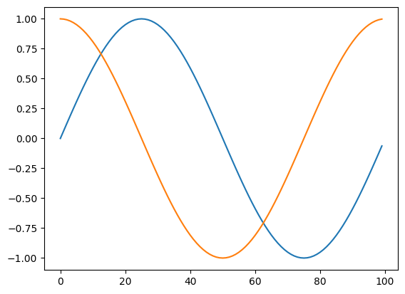
bs, c_in, seq_len = 1,3,100
t1 = torch.rand(bs, c_in, seq_len)
t2 = torch.arange(seq_len)
t2 = torch.cat([t2[35:], t2[:35]]).reshape(1, 1, -1)
t = TSTensor(torch.cat([t1, t2], 1))
mask = torch.rand_like(t) > .8
t[mask] = np.nan
enc_t = TSCyclicalPosition(3)(t)
test_ne(enc_t, t)
assert t.shape[1] == enc_t.shape[1] - 2
plt.plot(enc_t[0, -2:].cpu().numpy().T)
plt.show()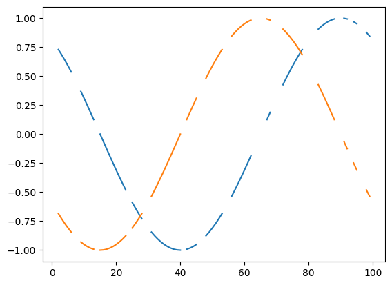
TSLinearPosition
def TSLinearPosition(
linear_var:int=None, # Optional variable to indicate the steps withing the cycle (ie minute of the day)
var_range:tuple=None, # Optional range indicating min and max values of the linear variable
magnitude:NoneType=None, # Added for compatibility. It's not used.
drop_var:bool=False, # Flag to indicate if the cyclical var is removed
lin_range:tuple=(-1, 1), kwargs:VAR_KEYWORD
):
Concatenates the position along the sequence as 1 additional variable
bs, c_in, seq_len = 1,3,100
t = TSTensor(torch.rand(bs, c_in, seq_len))
enc_t = TSLinearPosition()(t)
test_ne(enc_t, t)
assert t.shape[1] == enc_t.shape[1] - 1
plt.plot(enc_t[0, -1].cpu().numpy().T)
plt.show()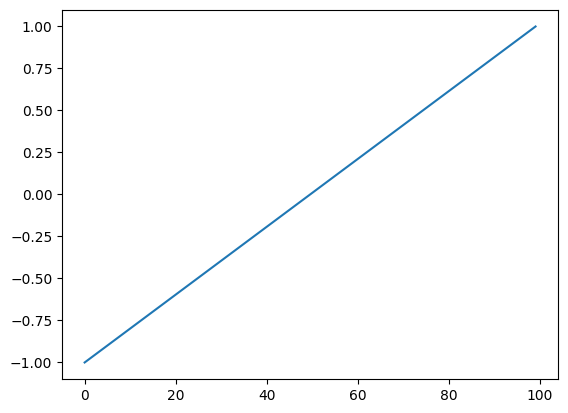
t = torch.arange(100)
t1 = torch.cat([t[30:], t[:30]]).reshape(1, 1, -1)
t2 = torch.cat([t[52:], t[:52]]).reshape(1, 1, -1)
t = torch.cat([t1, t2]).float()
mask = torch.rand_like(t) > .8
t[mask] = np.nan
t = TSTensor(t)
enc_t = TSLinearPosition(linear_var=0, var_range=(0, 100), drop_var=True)(t)
test_ne(enc_t, t)
assert t.shape[1] == enc_t.shape[1]
plt.plot(enc_t[0, -1].cpu().numpy().T)
plt.show()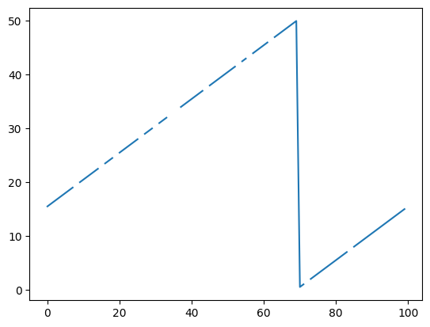
TSMissingness
def TSMissingness(
sel_vars:NoneType=None, feature_idxs:NoneType=None, magnitude:NoneType=None, kwargs:VAR_KEYWORD
):
Concatenates data missingness for selected features along the sequence as additional variables
bs, c_in, seq_len = 1,3,100
t = TSTensor(torch.rand(bs, c_in, seq_len))
t[t>.5] = np.nan
enc_t = TSMissingness(sel_vars=[0,2])(t)
test_eq(enc_t.shape[1], 5)
test_eq(enc_t[:, 3:], torch.isnan(t[:, [0,2]]).float())TSPositionGaps
def TSPositionGaps(
sel_vars:NoneType=None, feature_idxs:NoneType=None, magnitude:NoneType=None, forward:bool=True,
backward:bool=False, nearest:bool=False, normalize:bool=True, kwargs:VAR_KEYWORD
):
Concatenates gaps for selected features along the sequence as additional variables
bs, c_in, seq_len = 1,3,8
t = TSTensor(torch.rand(bs, c_in, seq_len))
t[t>.5] = np.nan
enc_t = TSPositionGaps(sel_vars=[0,2], forward=True, backward=True, nearest=True, normalize=False)(t)
test_eq(enc_t.shape[1], 9)
enc_t.datatensor([[[ nan, 0.3835, 0.1337, 0.4752, 0.2106, nan, 0.0298, 0.4615],
[0.0902, 0.0271, nan, 0.2260, 0.3606, 0.2805, 0.0956, nan],
[0.0213, nan, 0.0517, 0.2521, nan, nan, nan, 0.4829],
[1.0000, 2.0000, 1.0000, 1.0000, 1.0000, 1.0000, 2.0000, 1.0000],
[1.0000, 1.0000, 2.0000, 1.0000, 1.0000, 2.0000, 3.0000, 4.0000],
[1.0000, 1.0000, 1.0000, 1.0000, 2.0000, 1.0000, 1.0000, 1.0000],
[2.0000, 1.0000, 1.0000, 4.0000, 3.0000, 2.0000, 1.0000, 1.0000],
[1.0000, 1.0000, 1.0000, 1.0000, 1.0000, 1.0000, 1.0000, 1.0000],
[1.0000, 1.0000, 1.0000, 1.0000, 1.0000, 2.0000, 1.0000, 1.0000]]])TSRollingMean
def TSRollingMean(
sel_vars:NoneType=None, feature_idxs:NoneType=None, magnitude:NoneType=None, window:int=2, replace:bool=False,
kwargs:VAR_KEYWORD
):
Calculates the rolling mean for all/ selected features alongside the sequence
It replaces the original values or adds additional variables (default) If nan values are found, they will be filled forward and backward
bs, c_in, seq_len = 1,3,8
t = TSTensor(torch.rand(bs, c_in, seq_len))
t[t > .6] = np.nan
print(t.data)
enc_t = TSRollingMean(sel_vars=[0,2], window=3)(t)
test_eq(enc_t.shape[1], 5)
print(enc_t.data)
enc_t = TSRollingMean(window=3, replace=True)(t)
test_eq(enc_t.shape[1], 3)
print(enc_t.data)tensor([[[0.4689, 0.0982, 0.1035, nan, nan, 0.0545, 0.3980, nan],
[0.5300, 0.3087, nan, 0.1964, 0.5894, 0.2301, nan, nan],
[0.2116, 0.5166, nan, 0.3028, nan, 0.2026, 0.4023, 0.2411]]])
tensor([[[0.4689, 0.0982, 0.1035, 0.1035, 0.1035, 0.0545, 0.3980, 0.3980],
[0.5300, 0.3087, nan, 0.1964, 0.5894, 0.2301, nan, nan],
[0.2116, 0.5166, 0.5166, 0.3028, 0.3028, 0.2026, 0.4023, 0.2411],
[0.4689, 0.2835, 0.2235, 0.1017, 0.1035, 0.0871, 0.1853, 0.2835],
[0.2116, 0.3641, 0.4149, 0.4453, 0.3741, 0.2694, 0.3026, 0.2820]]])
tensor([[[0.4689, 0.2835, 0.2235, 0.1017, 0.1035, 0.0871, 0.1853, 0.2835],
[0.5300, 0.4193, 0.3825, 0.2713, 0.3648, 0.3386, 0.3498, 0.2301],
[0.2116, 0.3641, 0.4149, 0.4453, 0.3741, 0.2694, 0.3026, 0.2820]]])TSLogReturn
def TSLogReturn(
lag:int=1, pad:bool=True, kwargs:VAR_KEYWORD
):
Calculates log-return of batch of type TSTensor. For positive values only
t = TSTensor([1,2,4,8,16,32,64,128,256]).float()
test_eq(TSLogReturn(pad=False)(t).std(), 0)TSAdd
def TSAdd(
add, kwargs:VAR_KEYWORD
):
Add a defined amount to each batch of type TSTensor.
t = TSTensor([1,2,3]).float()
test_eq(TSAdd(1)(t), TSTensor([2,3,4]).float())TSClipByVar
def TSClipByVar(
var_min_max, kwargs:VAR_KEYWORD
):
Clip batch of type TSTensor by variable
Args: var_min_max: list of tuples containing variable index, min value (or None) and max value (or None)
t = TSTensor(torch.rand(16, 3, 10) * tensor([1,10,100]).reshape(1,-1,1))
max_values = t.max(0).values.max(-1).values.data
max_values2 = TSClipByVar([(1,None,5), (2,10,50)])(t).max(0).values.max(-1).values.data
test_le(max_values2[1], 5)
test_ge(max_values2[2], 10)
test_le(max_values2[2], 50)TSDropVars
def TSDropVars(
drop_vars, kwargs:VAR_KEYWORD
):
Drops selected variable from the input
t = TSTensor(torch.arange(24).reshape(2, 3, 4))
enc_t = TSDropVars(2)(t)
test_ne(t, enc_t)
enc_t.datatensor([[[ 0, 1, 2, 3],
[ 4, 5, 6, 7]],
[[12, 13, 14, 15],
[16, 17, 18, 19]]])TSOneHotEncode
def TSOneHotEncode(
sel_var:int, # Variable that is one-hot encoded
unique_labels:list, # List containing all labels (excluding nan values)
add_na:bool=False, # Flag to indicate if values not included in vocab should be set as 0
drop_var:bool=True, # Flag to indicate if the selected var is removed
magnitude:NoneType=None, # Added for compatibility. It's not used.
kwargs:VAR_KEYWORD
):
Delegates (__call__,decode,setup) to (encodes,decodes,setups) if split_idx matches
bs = 2
seq_len = 5
t_cont = torch.rand(bs, 1, seq_len)
t_cat = torch.randint(0, 3, t_cont.shape)
t = TSTensor(torch.cat([t_cat, t_cont], 1))
t_cattensor([[[2, 1, 0, 1, 2]],
[[1, 2, 0, 2, 2]]])tfm = TSOneHotEncode(0, [0, 1, 2])
output = tfm(t)[:, -3:].data
test_eq(t_cat, torch.argmax(tfm(t)[:, -3:], 1)[:, None])
tfm(t)[:, -3:].datatensor([[[0., 0., 1., 0., 0.],
[0., 1., 0., 1., 0.],
[1., 0., 0., 0., 1.]],
[[0., 0., 1., 0., 0.],
[1., 0., 0., 0., 0.],
[0., 1., 0., 1., 1.]]])bs = 2
seq_len = 5
t_cont = torch.rand(bs, 1, seq_len)
t_cat = torch.tensor([[10., 5., 11., np.nan, 12.], [ 5., 12., 10., np.nan, 11.]])[:, None]
t = TSTensor(torch.cat([t_cat, t_cont], 1))
t_cattensor([[[10., 5., 11., nan, 12.]],
[[ 5., 12., 10., nan, 11.]]])tfm = TSOneHotEncode(0, [10, 11, 12], drop_var=False)
mask = ~torch.isnan(t[:, 0])
test_eq(tfm(t)[:, 0][mask], t[:, 0][mask])
tfm(t)[:, -3:].datatensor([[[1., 0., 0., 0., 0.],
[0., 0., 1., 0., 0.],
[0., 0., 0., 0., 1.]],
[[0., 0., 1., 0., 0.],
[0., 0., 0., 0., 1.],
[0., 1., 0., 0., 0.]]])t1 = torch.randint(3, 7, (2, 1, 10))
t2 = torch.rand(2, 1, 10)
t = TSTensor(torch.cat([t1, t2], 1))
output = TSOneHotEncode(0, [3, 4, 5], add_na=True, drop_var=True)(t)
test_eq((t1 > 5).float(), output.data[:, [1]])
test_eq((t1 == 3).float(), output.data[:, [2]])
test_eq((t1 == 4).float(), output.data[:, [3]])
test_eq((t1 == 5).float(), output.data[:, [4]])
test_eq(output.shape, (t.shape[0], 5, t.shape[-1]))TSPosition
def TSPosition(
steps:list, # List containing the steps passed as an additional variable. Theu should be normalized.
magnitude:NoneType=None, # Added for compatibility. It's not used.
kwargs:VAR_KEYWORD
):
Delegates (__call__,decode,setup) to (encodes,decodes,setups) if split_idx matches
t = TSTensor(torch.rand(2, 1, 10)).float()
a = np.linspace(-1, 1, 10).astype('float64')
TSPosition(a)(t).data.dtype, t.dtype(torch.float32, torch.float32)PatchEncoder
def PatchEncoder(
patch_len:int, # Number of time steps in each patch.
patch_stride:int=None, # Stride of the patch.
pad_at_start:bool=True, # If True, pad the input tensor at the start to ensure that the input tensor is evenly divisible by the patch length.
value:float=0.0, # Value to pad the input tensor with.
seq_len:int=None, # Number of time steps in the input tensor. If None, make sure seq_len >= patch_len and a multiple of stride
merge_dims:bool=True, # If True, merge channels within the same patch.
reduction:str='none', # type of reduction applied. Available: "none", "mean", "min", "max", "mode"
reduction_dim:int=-1, # dimension where the reduction is applied
swap_dims:tuple=None, # If True, swap the time and channel dimensions.
):
Creates a sequence of patches from a 3d input tensor.
seq_len = 17
patch_len = 10
patch_stride = 5
z11 = torch.arange(seq_len).reshape(1, 1, -1)
z12 = torch.arange(seq_len).reshape(1, 1, -1) * 10
z1 = torch.cat((z11, z12), dim=1)
z21 = torch.arange(seq_len).reshape(1, 1, -1)
z22 = torch.arange(seq_len).reshape(1, 1, -1) * 10
z2 = torch.cat((z21, z22), dim=1) + 1
z31 = torch.arange(seq_len).reshape(1, 1, -1)
z32 = torch.arange(seq_len).reshape(1, 1, -1) * 10
z3 = torch.cat((z31, z32), dim=1) + 2
z = torch.cat((z11, z21, z31), dim=0)
z = torch.cat((z1, z2, z3), dim=0)
print(z.shape, "\n")
print(z)
patch_encoder = PatchEncoder(patch_len=patch_len, patch_stride=patch_stride, value=-1, seq_len=seq_len, merge_dims=True)
output = patch_encoder(z)
print(output.shape, "\n")
first_token = output[..., 0]
expected_first_token = torch.tensor([[-1, -1, -1, 0, 1, 2, 3, 4, 5, 6, -1, -1, -1, 0, 10, 20, 30, 40,
50, 60],
[-1, -1, -1, 1, 2, 3, 4, 5, 6, 7, -1, -1, -1, 1, 11, 21, 31, 41,
51, 61],
[-1, -1, -1, 2, 3, 4, 5, 6, 7, 8, -1, -1, -1, 2, 12, 22, 32, 42,
52, 62]])
test_eq(first_token, expected_first_token)torch.Size([3, 2, 17])
tensor([[[ 0, 1, 2, 3, 4, 5, 6, 7, 8, 9, 10, 11, 12, 13,
14, 15, 16],
[ 0, 10, 20, 30, 40, 50, 60, 70, 80, 90, 100, 110, 120, 130,
140, 150, 160]],
[[ 1, 2, 3, 4, 5, 6, 7, 8, 9, 10, 11, 12, 13, 14,
15, 16, 17],
[ 1, 11, 21, 31, 41, 51, 61, 71, 81, 91, 101, 111, 121, 131,
141, 151, 161]],
[[ 2, 3, 4, 5, 6, 7, 8, 9, 10, 11, 12, 13, 14, 15,
16, 17, 18],
[ 2, 12, 22, 32, 42, 52, 62, 72, 82, 92, 102, 112, 122, 132,
142, 152, 162]]])
torch.Size([3, 20, 3])
TSPatchEncoder
def TSPatchEncoder(
patch_len:int, # Number of time steps in each patch.
patch_stride:int=None, # Stride of the patch.
pad_at_start:bool=True, # If True, pad the input tensor at the start to ensure that the input tensor is evenly divisible by the patch length.
value:float=0.0, # Value to pad the input tensor with.
seq_len:int=None, # Number of time steps in the input tensor. If None, make sure seq_len >= patch_len and a multiple of stride
merge_dims:bool=True, # If True, merge channels within the same patch.
reduction:str='none', # type of reduction applied. Available: "none", "mean", "min", "max", "mode"
reduction_dim:int=-2, # dimension where the y reduction is applied.
swap_dims:tuple=None, # If True, swap the time and channel dimensions.
):
Tansforms a time series into a sequence of patches along the last dimension
bs = 2
c_in = 1
seq_len = 10
patch_len = 4
t = TSTensor(torch.arange(bs * c_in * seq_len).reshape(bs, c_in, seq_len))
print(t.data)
print(t.shape, "\n")
patch_encoder = TSPatchEncoder(patch_len=patch_len, patch_stride=1, seq_len=seq_len)
output = patch_encoder(t)
test_eq(output.shape, ([bs, patch_len, 7]))
print("first patch:\n", output[..., 0].data, "\n")
patch_encoder = TSPatchEncoder(patch_len=patch_len, patch_stride=None, seq_len=seq_len)
output = patch_encoder(t)
test_eq(output.shape, ([bs, patch_len, 3]))
print("first patch:\n", output[..., 0].data, "\n")tensor([[[ 0, 1, 2, 3, 4, 5, 6, 7, 8, 9]],
[[10, 11, 12, 13, 14, 15, 16, 17, 18, 19]]])
torch.Size([2, 1, 10])
first patch:
tensor([[ 0, 1, 2, 3],
[10, 11, 12, 13]])
first patch:
tensor([[ 0, 0, 0, 1],
[ 0, 0, 10, 11]])
TSTuplePatchEncoder
def TSTuplePatchEncoder(
patch_len:int, # Number of time steps in each patch.
patch_stride:int=None, # Stride of the patch.
pad_at_start:bool=True, # If True, pad the input tensor at the start to ensure that the input tensor is evenly divisible by the patch length.
value:float=0.0, # Value to pad the input tensor with.
seq_len:int=None, # Number of time steps in the input tensor. If None, make sure seq_len >= patch_len and a multiple of stride
merge_dims:bool=True, # If True, merge y channels within the same patch.
reduction:str='none', # type of reduction applied to y. Available: "none", "mean", "min", "max", "mode"
reduction_dim:int=-2, # dimension where the y reduction is applied.
swap_dims:tuple=None, # If True, swap the time and channel dimensions in y.
):
Tansforms a time series with x and y into sequences of patches along the last dimension
# test
bs = 2
c_in = 2
seq_len = 10
patch_len = 4
x = torch.arange(bs * c_in * seq_len).reshape(bs, c_in, seq_len)
y = torch.arange(bs * c_in * seq_len).reshape(bs, c_in, seq_len) * 10
print(x)
print(y)
patch_encoder = TSTuplePatchEncoder(patch_len=patch_len, patch_stride=1, seq_len=seq_len, merge_dims=True)
x_out, y_out = patch_encoder((x, y))
test_eq(x_out.shape, ([bs, c_in * patch_len, 7]))
test_eq(y_out.shape, ([bs, c_in * patch_len, 7]))
print("first x patch:\n", x_out[..., 0].data, "\n")
print("first y patch:\n", y_out[..., 0].data, "\n")
patch_encoder = TSTuplePatchEncoder(patch_len=patch_len, patch_stride=1, seq_len=seq_len, merge_dims=False, reduction="max")
x_out, y_out = patch_encoder((x, y))
test_eq(x_out.shape, ([bs, c_in * patch_len, 7]))
test_eq(y_out.shape, ([bs, c_in, 7]))
print("first x patch:\n", x_out[..., 0].data, "\n")
print("first y patch:\n", y_out[..., 0].data, "\n")tensor([[[ 0, 1, 2, 3, 4, 5, 6, 7, 8, 9],
[10, 11, 12, 13, 14, 15, 16, 17, 18, 19]],
[[20, 21, 22, 23, 24, 25, 26, 27, 28, 29],
[30, 31, 32, 33, 34, 35, 36, 37, 38, 39]]])
tensor([[[ 0, 10, 20, 30, 40, 50, 60, 70, 80, 90],
[100, 110, 120, 130, 140, 150, 160, 170, 180, 190]],
[[200, 210, 220, 230, 240, 250, 260, 270, 280, 290],
[300, 310, 320, 330, 340, 350, 360, 370, 380, 390]]])
first x patch:
tensor([[ 0, 1, 2, 3, 10, 11, 12, 13],
[20, 21, 22, 23, 30, 31, 32, 33]])
first y patch:
tensor([[ 0, 10, 20, 30, 100, 110, 120, 130],
[200, 210, 220, 230, 300, 310, 320, 330]])
first x patch:
tensor([[ 0, 1, 2, 3, 10, 11, 12, 13],
[20, 21, 22, 23, 30, 31, 32, 33]])
first y patch:
tensor([[ 30, 130],
[230, 330]])
sklearn API transforms
object2date
def object2date(
x, format:NoneType=None
):
Call self as a function.
TSShrinkDataFrame
def TSShrinkDataFrame(
columns:NoneType=None, # List[str], optional. Columns to shrink, all columns by default.
skip:NoneType=None, # List[str], optional. Columns to skip, None by default.
obj2cat:bool=True, # bool, optional. Convert object columns to category, True by default.
int2uint:bool=False, # bool, optional. Convert int columns to uint, False by default.
verbose:bool=True, # bool, optional. Print memory usage info. True by default.
):
A transformer to shrink dataframe or series memory usage
df = pd.DataFrame()
df["ints64"] = np.random.randint(0,3,10)
df['floats64'] = np.random.rand(10)
tfm = TSShrinkDataFrame()
df = tfm.fit_transform(df)
test_eq(df["ints64"].dtype, "int8")
test_eq(df["floats64"].dtype, "float32")Initial memory usage: 292.00 B
Final memory usage : 182.00 B (-37.7%)# test with date
df = pd.DataFrame()
df["dates"] = pd.date_range('1/1/2011', periods=10, freq='MS')
df["ints64"] = np.random.randint(0,3,10)
df['floats64'] = np.random.rand(10)
tfm = TSShrinkDataFrame()
df = tfm.fit_transform(df)
assert pd.api.types.is_datetime64_any_dtype(df["dates"])
test_eq(df["ints64"].dtype, "int8")
test_eq(df["floats64"].dtype, "float32")Initial memory usage: 372.00 B
Final memory usage : 262.00 B (-29.6%)# test with date and series
df = pd.DataFrame()
df["dates"] = pd.date_range('1/1/2011', periods=10, freq='MS')
tfm = TSShrinkDataFrame()
df = tfm.fit_transform(df["dates"])
assert pd.api.types.is_datetime64_any_dtype(df)Initial memory usage: 212.00 B
Final memory usage : 212.00 B (0.0%)TSOneHotEncoder
def TSOneHotEncoder(
columns:NoneType=None, # (str or List[str], optional): Column name(s) to encode. If None, all columns will be encoded. Defaults to None.
drop:bool=True, # (bool, optional): Whether to drop the original columns after encoding. Defaults to True.
add_na:bool=True, # (bool, optional): Whether to add a 'NaN' category for missing values. Defaults to True.
dtype:type=int8, # (type, optional): Data type of the encoded output. Defaults to np.int64.
):
Encode categorical variables using one-hot encoding
df = pd.DataFrame()
df["a"] = np.random.randint(0,2,10)
df["b"] = np.random.randint(0,3,10)
unique_cols = len(df["a"].unique()) + len(df["b"].unique())
tfm = TSOneHotEncoder()
tfm.fit(df)
df = tfm.transform(df)
test_eq(df.shape[1], unique_cols)TSCategoricalEncoder
def TSCategoricalEncoder(
columns:NoneType=None, # List[str], optional. Columns to encode, all columns by default.
add_na:bool=True, # bool, optional. Add a NaN category, True by default.
sort:bool=True, # bool, optional. Sort categories by frequency, True by default.
categories:str='auto', # dict, optional. The custom mapping of categories. 'auto' by default.
inplace:bool=True, # bool, optional. Modify input DataFrame, True by default.
prefix:NoneType=None, # str, optional. Prefix for created column names. None by default.
suffix:NoneType=None, # str, optional. Suffix for created column names. None by default.
drop:bool=False, # bool, optional. Drop original columns, False by default.
):
A transformer to encode categorical columns
Stateful transforms like TSCategoricalEncoder can easily be serialized.
import joblibdf = pd.DataFrame()
df["a"] = alphabet[np.random.randint(0,2,100)]
df["b"] = ALPHABET[np.random.randint(0,3,100)]
display(df)
a_unique = len(df["a"].unique())
b_unique = len(df["b"].unique())
tfm = TSCategoricalEncoder()
tfm.fit(df, idxs=slice(0, 50))
joblib.dump(tfm, "data/TSCategoricalEncoder.joblib")
tfm = joblib.load("data/TSCategoricalEncoder.joblib")
df.loc[0, "a"] = 'z'
df.loc[1, "a"] = 'h'
df = tfm.transform(df)
display(df)
test_eq(df['a'].max(), a_unique)
test_eq(df['b'].max(), b_unique)
df = tfm.inverse_transform(df)
display(df)| a | b | |
|---|---|---|
| 0 | a | C |
| 1 | b | A |
| 2 | a | B |
| 3 | b | C |
| 4 | a | A |
| ... | ... | ... |
| 95 | b | A |
| 96 | b | C |
| 97 | a | B |
| 98 | a | A |
| 99 | a | B |
100 rows × 2 columns
| a | b | |
|---|---|---|
| 0 | 0 | 3 |
| 1 | 0 | 1 |
| 2 | 1 | 2 |
| 3 | 2 | 3 |
| 4 | 1 | 1 |
| ... | ... | ... |
| 95 | 2 | 1 |
| 96 | 2 | 3 |
| 97 | 1 | 2 |
| 98 | 1 | 1 |
| 99 | 1 | 2 |
100 rows × 2 columns
| a | b | |
|---|---|---|
| 0 | #na# | C |
| 1 | #na# | A |
| 2 | a | B |
| 3 | b | C |
| 4 | a | A |
| ... | ... | ... |
| 95 | b | A |
| 96 | b | C |
| 97 | a | B |
| 98 | a | A |
| 99 | a | B |
100 rows × 2 columns
df = pd.DataFrame()
df["a"] = alphabet[np.random.randint(0,2,100)]
df["a"] = df["a"].astype('category')
df["b"] = ALPHABET[np.random.randint(0,3,100)]
display(df)
a_unique = len(df["a"].unique())
b_unique = len(df["b"].unique())
tfm = TSCategoricalEncoder()
tfm.fit(df)
joblib.dump(tfm, "data/TSCategoricalEncoder.joblib")
tfm = joblib.load("data/TSCategoricalEncoder.joblib")
df["a"] = alphabet[np.random.randint(0,5,100)]
df["a"] = df["a"].astype('category')
df["b"] = ALPHABET[np.random.randint(0,3,100)]
display(df)
df = tfm.transform(df)
display(df)
test_eq(df['a'].max(), a_unique)
test_eq(df['b'].max(), b_unique)
df = tfm.inverse_transform(df)
display(df)| a | b | |
|---|---|---|
| 0 | b | B |
| 1 | b | B |
| 2 | a | B |
| 3 | a | B |
| 4 | b | C |
| ... | ... | ... |
| 95 | b | A |
| 96 | a | B |
| 97 | a | A |
| 98 | a | C |
| 99 | b | B |
100 rows × 2 columns
| a | b | |
|---|---|---|
| 0 | d | B |
| 1 | e | C |
| 2 | a | B |
| 3 | b | A |
| 4 | e | A |
| ... | ... | ... |
| 95 | a | A |
| 96 | e | B |
| 97 | a | C |
| 98 | a | C |
| 99 | d | A |
100 rows × 2 columns
| a | b | |
|---|---|---|
| 0 | 0 | 2 |
| 1 | 0 | 3 |
| 2 | 1 | 2 |
| 3 | 2 | 1 |
| 4 | 0 | 1 |
| ... | ... | ... |
| 95 | 1 | 1 |
| 96 | 0 | 2 |
| 97 | 1 | 3 |
| 98 | 1 | 3 |
| 99 | 0 | 1 |
100 rows × 2 columns
| a | b | |
|---|---|---|
| 0 | #na# | B |
| 1 | #na# | C |
| 2 | a | B |
| 3 | b | A |
| 4 | #na# | A |
| ... | ... | ... |
| 95 | a | A |
| 96 | #na# | B |
| 97 | a | C |
| 98 | a | C |
| 99 | #na# | A |
100 rows × 2 columns
df = pd.DataFrame()
df["a"] = alphabet[np.random.randint(0,2,100)]
df["a"] = df["a"].astype('category')
s = df['a']
display(s)
tfm = TSCategoricalEncoder()
tfm.fit(s)
joblib.dump(tfm, "data/TSCategoricalEncoder.joblib")
tfm = joblib.load("data/TSCategoricalEncoder.joblib")
s = tfm.transform(s)
display(s)
s = tfm.inverse_transform(s)
display(s)0 a
1 a
2 b
3 a
4 b
..
95 a
96 b
97 b
98 b
99 a
Name: a, Length: 100, dtype: category
Categories (2, object): ['a', 'b']0 1
1 1
2 2
3 1
4 2
..
95 1
96 2
97 2
98 2
99 1
Length: 100, dtype: int80 a
1 a
2 b
3 a
4 b
..
95 a
96 b
97 b
98 b
99 a
Length: 100, dtype: objectTSTargetEncoder
def TSTargetEncoder(
target_column, # column containing the target
columns:NoneType=None, # List[str], optional. Columns to encode, all non-numerical columns by default.
inplace:bool=True, # bool, optional. Modify input DataFrame, True by default.
prefix:NoneType=None, # str, optional. Prefix for created column names. None by default.
suffix:NoneType=None, # str, optional. Suffix for created column names. None by default.
drop:bool=True, # bool, optional. Drop original columns, False by default.
dtypes:list=['object', 'category'], # List[str]. List with dtypes that will be used to identify columns to encode if not explicitly passed.
):
Mixin class for all transformers in scikit-learn.
This mixin defines the following functionality:
- a
fit_transformmethod that delegates tofitandtransform; - a
set_outputmethod to outputXas a specific container type.
If :term:get_feature_names_out is defined, then :class:BaseEstimator will automatically wrap transform and fit_transform to follow the set_output API. See the :ref:developer_api_set_output for details.
:class:OneToOneFeatureMixin and :class:ClassNamePrefixFeaturesOutMixin are helpful mixins for defining :term:get_feature_names_out.
from sklearn.model_selection import train_test_split
# Create a dataframe with 100 rows
np.random.seed(42)
df = pd.DataFrame({
'category1': np.random.choice(['cat', 'dog', 'rabbit'], 100),
'category2': np.random.choice(['large', 'small'], 100),
'continuous': np.random.rand(100),
'target': np.random.randint(0, 2, 100)
})
display(df)
# Split the data into train and test sets
train_idx, test_idx = train_test_split(np.arange(100), test_size=0.2, random_state=42)
print(train_idx.shape)
# Initialize the encoder
encoder = TSTargetEncoder(columns=['category1', 'category2'], target_column='target', inplace=False, suffix="te", drop=False)
# Fit the encoder using the training data
encoder.fit(df, idxs=train_idx)
# Transform the whole dataframe
df_encoded = encoder.transform(df)
# Check the results
for c in ["category1", "category2"]:
for v in df[c].unique():
assert df.loc[train_idx][df.loc[train_idx, c] == v]["target"].mean() == df_encoded[df_encoded[c] == v][f"{c}_te"].mean()
df_encoded(80,)| category1 | category2 | continuous | target | |
|---|---|---|---|---|
| 0 | rabbit | small | 0.896091 | 0 |
| 1 | cat | small | 0.318003 | 1 |
| 2 | rabbit | small | 0.110052 | 1 |
| 3 | rabbit | large | 0.227935 | 0 |
| 4 | cat | large | 0.427108 | 0 |
| ... | ... | ... | ... | ... |
| 95 | cat | small | 0.325400 | 0 |
| 96 | cat | large | 0.746491 | 0 |
| 97 | rabbit | small | 0.649633 | 1 |
| 98 | cat | small | 0.849223 | 0 |
| 99 | cat | large | 0.657613 | 1 |
100 rows × 4 columns
| category1 | category2 | continuous | target | category1_te | category2_te | |
|---|---|---|---|---|---|---|
| 0 | rabbit | small | 0.896091 | 0 | 0.565217 | 0.500000 |
| 1 | cat | small | 0.318003 | 1 | 0.555556 | 0.500000 |
| 2 | rabbit | small | 0.110052 | 1 | 0.565217 | 0.500000 |
| 3 | rabbit | large | 0.227935 | 0 | 0.565217 | 0.521739 |
| 4 | cat | large | 0.427108 | 0 | 0.555556 | 0.521739 |
| ... | ... | ... | ... | ... | ... | ... |
| 95 | cat | small | 0.325400 | 0 | 0.555556 | 0.500000 |
| 96 | cat | large | 0.746491 | 0 | 0.555556 | 0.521739 |
| 97 | rabbit | small | 0.649633 | 1 | 0.565217 | 0.500000 |
| 98 | cat | small | 0.849223 | 0 | 0.555556 | 0.500000 |
| 99 | cat | large | 0.657613 | 1 | 0.555556 | 0.521739 |
100 rows × 6 columns
TSDateTimeEncoder
def TSDateTimeEncoder(
datetime_columns:NoneType=None, prefix:NoneType=None, drop:bool=True, time:bool=False,
attr:list=['Year', 'Month', 'Week', 'Day', 'Dayofweek', 'Dayofyear', 'Is_month_end', 'Is_month_start', 'Is_quarter_end', 'Is_quarter_start', 'Is_year_end', 'Is_year_start']
):
Base class for all estimators in scikit-learn.
Inheriting from this class provides default implementations of:
- setting and getting parameters used by
GridSearchCVand friends; - textual and HTML representation displayed in terminals and IDEs;
- estimator serialization;
- parameters validation;
- data validation;
- feature names validation.
Read more in the :ref:User Guide <rolling_your_own_estimator>.
import datetime as dtdf = pd.DataFrame()
df.loc[0, "date"] = dt.datetime.now()
df.loc[1, "date"] = dt.datetime.now() + pd.Timedelta(1, unit="D")
tfm = TSDateTimeEncoder()
joblib.dump(tfm, "data/TSDateTimeEncoder.joblib")
tfm = joblib.load("data/TSDateTimeEncoder.joblib")
tfm.fit_transform(df)| _Year | _Month | _Week | _Day | _Dayofweek | _Dayofyear | _Is_month_end | _Is_month_start | _Is_quarter_end | _Is_quarter_start | _Is_year_end | _Is_year_start | |
|---|---|---|---|---|---|---|---|---|---|---|---|---|
| 0 | 2026 | 5 | 22 | 26 | 1 | 146 | False | False | False | False | False | False |
| 1 | 2026 | 5 | 22 | 27 | 2 | 147 | False | False | False | False | False | False |
TSDropIfTrueCols
def TSDropIfTrueCols(
columns:NoneType=None
):
Base class for all estimators in scikit-learn.
Inheriting from this class provides default implementations of:
- setting and getting parameters used by
GridSearchCVand friends; - textual and HTML representation displayed in terminals and IDEs;
- estimator serialization;
- parameters validation;
- data validation;
- feature names validation.
Read more in the :ref:User Guide <rolling_your_own_estimator>.
# test TSDropIfTrueCols
df = pd.DataFrame()
df["a"] = [0, 0, 1, 0, 0]
df["b"] = [0, 0, 0, 0, 0]
df["c"] = [0, 1, 0, 0, 1]
expected_output = pd.DataFrame()
expected_output["b"] = [0, 0, 0, 0]
expected_output["c"] = [0, 1, 0, 1]
tfm = TSDropIfTrueCols("a")
output = tfm.fit_transform(df)
test_eq(output, expected_output),(None,)TSApplyFunction
def TSApplyFunction(
function, groups:NoneType=None, group_keys:bool=False, axis:int=1, columns:NoneType=None, reset_index:bool=False,
drop:bool=True
):
Base class for all estimators in scikit-learn.
Inheriting from this class provides default implementations of:
- setting and getting parameters used by
GridSearchCVand friends; - textual and HTML representation displayed in terminals and IDEs;
- estimator serialization;
- parameters validation;
- data validation;
- feature names validation.
Read more in the :ref:User Guide <rolling_your_own_estimator>.
df = pd.DataFrame()
df["a"] = [0, 0, 1, 0, 0]
df["b"] = [0, 0, 0, 0, 0]
df["c"] = [0, 1, 0, 0, 1]
df.apply(lambda x: 1, )a 1
b 1
c 1
dtype: int64# test ApplyFunction without groups
df = pd.DataFrame()
df["a"] = [0, 0, 1, 0, 0]
df["b"] = [0, 0, 0, 0, 0]
df["c"] = [0, 1, 0, 0, 1]
expected_output = pd.Series([1,1,1])
tfm = TSApplyFunction(lambda x: 1, axis=0, reset_index=True)
output = tfm.fit_transform(df)
test_eq(output, expected_output)# test ApplyFunction with groups and square function
df = pd.DataFrame()
df["a"] = [0, 1, 2, 3, 4]
df["id"] = [0, 0, 0, 1, 1]
expected_output = pd.Series([5, 25])
tfm = TSApplyFunction(lambda x: (x["a"]**2).sum(), groups="id")
output = tfm.fit_transform(df)
test_eq(output, expected_output)TSMissingnessEncoder
def TSMissingnessEncoder(
columns:NoneType=None
):
Base class for all estimators in scikit-learn.
Inheriting from this class provides default implementations of:
- setting and getting parameters used by
GridSearchCVand friends; - textual and HTML representation displayed in terminals and IDEs;
- estimator serialization;
- parameters validation;
- data validation;
- feature names validation.
Read more in the :ref:User Guide <rolling_your_own_estimator>.
data = np.random.rand(10,3)
data[data > .8] = np.nan
df = pd.DataFrame(data, columns=["a", "b", "c"])
tfm = TSMissingnessEncoder()
tfm.fit(df)
joblib.dump(tfm, "data/TSMissingnessEncoder.joblib")
tfm = joblib.load("data/TSMissingnessEncoder.joblib")
df = tfm.transform(df)
df| a | b | c | a_missing | b_missing | c_missing | |
|---|---|---|---|---|---|---|
| 0 | NaN | NaN | NaN | 1 | 1 | 1 |
| 1 | 0.511342 | 0.501516 | 0.798295 | 0 | 0 | 0 |
| 2 | 0.649964 | 0.701967 | 0.795793 | 0 | 0 | 0 |
| 3 | NaN | 0.337995 | 0.375583 | 1 | 0 | 0 |
| 4 | 0.093982 | 0.578280 | 0.035942 | 0 | 0 | 0 |
| 5 | 0.465598 | 0.542645 | 0.286541 | 0 | 0 | 0 |
| 6 | 0.590833 | 0.030500 | 0.037348 | 0 | 0 | 0 |
| 7 | NaN | 0.360191 | 0.127061 | 1 | 0 | 0 |
| 8 | 0.522243 | 0.769994 | 0.215821 | 0 | 0 | 0 |
| 9 | 0.622890 | 0.085347 | 0.051682 | 0 | 0 | 0 |
TSSortByColumns
def TSSortByColumns(
columns, # Columns to sort by
ascending:bool=True, # Ascending or descending
inplace:bool=True, # Perform operation in place
kind:str='stable', # Type of sort to use
na_position:str='last', # Where to place NaNs
ignore_index:bool=False, # Do not preserve index
key:NoneType=None, # Function to apply to values before sorting
):
Transforms a dataframe by sorting by columns.
# Test
df = pd.DataFrame(np.random.rand(10,3), columns=["a", "b", "c"])
df_ori = df.copy()
tfm = TSSortByColumns(["a", "b"])
df = tfm.fit_transform(df)
test_eq(df_ori.sort_values(["a", "b"]).values, df.values)TSSelectColumns
def TSSelectColumns(
columns, # str or List[str]. Selected columns.
):
Transform used to select columns
# Test
df = pd.DataFrame(np.random.rand(10,3), columns=["a", "b", "c"])
df_ori = df.copy()
tfm = TSSelectColumns(["a", "b"])
df = tfm.fit_transform(df)
test_eq(df_ori[["a", "b"]].values, df.values)
df = tfm.inverse_transform(df)TSStepsSinceStart
def TSStepsSinceStart(
datetime_col, # (str or List[str]): Column name(s) containing datetime values.
datetime_unit:str='D', # (str, optional): Time unit of the datetime values. Defaults to 'D'.
start_datetime:NoneType=None, # (str or pd.Timestamp, optional): The start datetime value. If None, the minimum value of the datetime_col is used. Defaults to None.
drop:bool=False, # (bool, optional): Whether to drop the datetime_col column after computing time steps. Defaults to False.
dtype:NoneType=None, # (type, optional): Data type of the time steps. Defaults to None.
):
Add a column indicating the number of steps since the start in each row
# Test
df = pd.DataFrame(np.random.rand(10,3), columns=["a", "b", "c"])
df["datetime"] = pd.date_range("2020-01-01", periods=10)
display(df)
df_ori = df.copy()
tfm = TSStepsSinceStart("datetime", datetime_unit="D", drop=True, dtype=np.int32)
df = tfm.fit_transform(df)
display(df)
test_eq(df["days_since_start"].values, np.arange(10))
df = tfm.inverse_transform(df)
test_eq(df_ori.values, df.values)| a | b | c | datetime | |
|---|---|---|---|---|
| 0 | 0.643288 | 0.458253 | 0.545617 | 2020-01-01 |
| 1 | 0.941465 | 0.386103 | 0.961191 | 2020-01-02 |
| 2 | 0.905351 | 0.195791 | 0.069361 | 2020-01-03 |
| 3 | 0.100778 | 0.018222 | 0.094443 | 2020-01-04 |
| 4 | 0.683007 | 0.071189 | 0.318976 | 2020-01-05 |
| 5 | 0.844875 | 0.023272 | 0.814468 | 2020-01-06 |
| 6 | 0.281855 | 0.118165 | 0.696737 | 2020-01-07 |
| 7 | 0.628943 | 0.877472 | 0.735071 | 2020-01-08 |
| 8 | 0.803481 | 0.282035 | 0.177440 | 2020-01-09 |
| 9 | 0.750615 | 0.806835 | 0.990505 | 2020-01-10 |
| a | b | c | days_since_start | |
|---|---|---|---|---|
| 0 | 0.643288 | 0.458253 | 0.545617 | 0 |
| 1 | 0.941465 | 0.386103 | 0.961191 | 1 |
| 2 | 0.905351 | 0.195791 | 0.069361 | 2 |
| 3 | 0.100778 | 0.018222 | 0.094443 | 3 |
| 4 | 0.683007 | 0.071189 | 0.318976 | 4 |
| 5 | 0.844875 | 0.023272 | 0.814468 | 5 |
| 6 | 0.281855 | 0.118165 | 0.696737 | 6 |
| 7 | 0.628943 | 0.877472 | 0.735071 | 7 |
| 8 | 0.803481 | 0.282035 | 0.177440 | 8 |
| 9 | 0.750615 | 0.806835 | 0.990505 | 9 |
TSStandardScaler
def TSStandardScaler(
columns:NoneType=None, # Column name(s) to be transformed. If None, all columns are transformed. Defaults to None.
mean:NoneType=None, # Mean value for each column. If None, the mean value of each column is calculated during the fit method. Defaults to None.
std:NoneType=None, # Stdev value for each column. If None, the standard deviation value of each column is calculated during the fit method. Defaults to None.
eps:float=1e-06, # A small value to avoid division by zero. Defaults to 1e-6.
):
Scale the values of specified columns in the input DataFrame to have a mean of 0 and standard deviation of 1.
# Test
df = pd.DataFrame(np.random.rand(100,3), columns=["a", "b", "c"])
tfm = TSStandardScaler()
df = tfm.fit_transform(df)
test_close(df.mean().values, np.zeros(3), 1e-3)
test_close(df.std().values, np.ones(3), 1e-3)# Test
df = pd.DataFrame(np.random.rand(1000,3), columns=["a", "b", "c"])
tfm = TSStandardScaler()
df = tfm.fit_transform(df, idxs=slice(0, 800))
test_close(df.mean().values, np.zeros(3), 1e-1)
test_close(df.std().values, np.ones(3), 1e-1)TSRobustScaler
def TSRobustScaler(
columns:NoneType=None, quantile_range:tuple=(25.0, 75.0), eps:float=1e-06
):
This Scaler removes the median and scales the data according to the quantile range (defaults to IQR: Interquartile Range)
# test RobustScaler
df = pd.DataFrame(np.random.rand(100,3), columns=["a", "b", "c"])
df["a"] = df["a"] * 100
df["b"] = df["b"] * 10
tfm = TSRobustScaler()
df = tfm.fit_transform(df)
test_close(df.median().values, np.zeros(3), 1e-3)TSAddMissingTimestamps
def TSAddMissingTimestamps(
datetime_col:NoneType=None, use_index:bool=False, unique_id_cols:NoneType=None, fill_value:float=nan,
range_by_group:bool=True, start_date:NoneType=None, end_date:NoneType=None, freq:NoneType=None
):
Mixin class for all transformers in scikit-learn.
This mixin defines the following functionality:
- a
fit_transformmethod that delegates tofitandtransform; - a
set_outputmethod to outputXas a specific container type.
If :term:get_feature_names_out is defined, then :class:BaseEstimator will automatically wrap transform and fit_transform to follow the set_output API. See the :ref:developer_api_set_output for details.
:class:OneToOneFeatureMixin and :class:ClassNamePrefixFeaturesOutMixin are helpful mixins for defining :term:get_feature_names_out.
# Test
df = pd.DataFrame(np.random.rand(10,3), columns=["a", "b", "c"])
df["datetime"] = pd.date_range("2020-01-01", periods=10)
df = df.iloc[[0, 2, 3, 5, 6, 8, 9]]
display(df)
tfm = TSAddMissingTimestamps(datetime_col="datetime", freq="D")
df = tfm.fit_transform(df)
display(df)
test_eq(df.shape[0], 10)| a | b | c | datetime | |
|---|---|---|---|---|
| 0 | 0.211126 | 0.752468 | 0.051294 | 2020-01-01 |
| 2 | 0.394572 | 0.529941 | 0.161367 | 2020-01-03 |
| 3 | 0.571996 | 0.805432 | 0.760161 | 2020-01-04 |
| 5 | 0.361075 | 0.408456 | 0.679697 | 2020-01-06 |
| 6 | 0.056680 | 0.034673 | 0.391911 | 2020-01-07 |
| 8 | 0.259828 | 0.886086 | 0.895690 | 2020-01-09 |
| 9 | 0.297287 | 0.229994 | 0.411304 | 2020-01-10 |
| datetime | a | b | c | |
|---|---|---|---|---|
| 0 | 2020-01-01 | 0.211126 | 0.752468 | 0.051294 |
| 1 | 2020-01-02 | NaN | NaN | NaN |
| 2 | 2020-01-03 | 0.394572 | 0.529941 | 0.161367 |
| 3 | 2020-01-04 | 0.571996 | 0.805432 | 0.760161 |
| 4 | 2020-01-05 | NaN | NaN | NaN |
| 5 | 2020-01-06 | 0.361075 | 0.408456 | 0.679697 |
| 6 | 2020-01-07 | 0.056680 | 0.034673 | 0.391911 |
| 7 | 2020-01-08 | NaN | NaN | NaN |
| 8 | 2020-01-09 | 0.259828 | 0.886086 | 0.895690 |
| 9 | 2020-01-10 | 0.297287 | 0.229994 | 0.411304 |
# Test
# Filling dates between min and max dates for each value in groupby column
dates = pd.date_range('2021-05-01', '2021-05-07').values
dates = np.concatenate((dates, dates))
data = np.zeros((len(dates), 4))
data[:, 0] = dates
data[:, 1] = np.array([0]*(len(dates)//2)+[1]*(len(dates)//2))
data[:, 2] = np.random.rand(len(dates))
data[:, 3] = np.random.rand(len(dates))
cols = ['date', 'id', 'feature1', 'feature2']
date_df = pd.DataFrame(data, columns=cols).astype({'date': 'datetime64[ns]', 'id': int, 'feature1': float, 'feature2': float})
date_df_with_missing_dates = date_df.drop([0,1,3,8,11,13]).reset_index(drop=True)
display(date_df_with_missing_dates)
tfm = TSAddMissingTimestamps(datetime_col="date", unique_id_cols="id", freq="D")
df = tfm.fit_transform(date_df_with_missing_dates.copy())
display(df)| date | id | feature1 | feature2 | |
|---|---|---|---|---|
| 0 | 2021-05-03 | 0 | 0.826065 | 0.793818 |
| 1 | 2021-05-05 | 0 | 0.824350 | 0.577807 |
| 2 | 2021-05-06 | 0 | 0.396992 | 0.866102 |
| 3 | 2021-05-07 | 0 | 0.156317 | 0.289440 |
| 4 | 2021-05-01 | 1 | 0.737951 | 0.467681 |
| 5 | 2021-05-03 | 1 | 0.671271 | 0.411190 |
| 6 | 2021-05-04 | 1 | 0.270644 | 0.427486 |
| 7 | 2021-05-06 | 1 | 0.992582 | 0.564232 |
| date | id | feature1 | feature2 | |
|---|---|---|---|---|
| 0 | 2021-05-03 | 0 | 0.826065 | 0.793818 |
| 1 | 2021-05-04 | 0 | NaN | NaN |
| 2 | 2021-05-05 | 0 | 0.824350 | 0.577807 |
| 3 | 2021-05-06 | 0 | 0.396992 | 0.866102 |
| 4 | 2021-05-07 | 0 | 0.156317 | 0.289440 |
| 5 | 2021-05-01 | 1 | 0.737951 | 0.467681 |
| 6 | 2021-05-02 | 1 | NaN | NaN |
| 7 | 2021-05-03 | 1 | 0.671271 | 0.411190 |
| 8 | 2021-05-04 | 1 | 0.270644 | 0.427486 |
| 9 | 2021-05-05 | 1 | NaN | NaN |
| 10 | 2021-05-06 | 1 | 0.992582 | 0.564232 |
# Test
display(date_df_with_missing_dates)
tfm = TSAddMissingTimestamps(datetime_col="date", unique_id_cols="id", freq="D", range_by_group=False)
df = tfm.fit_transform(date_df_with_missing_dates.copy())
display(df)| date | id | feature1 | feature2 | |
|---|---|---|---|---|
| 0 | 2021-05-03 | 0 | 0.826065 | 0.793818 |
| 1 | 2021-05-05 | 0 | 0.824350 | 0.577807 |
| 2 | 2021-05-06 | 0 | 0.396992 | 0.866102 |
| 3 | 2021-05-07 | 0 | 0.156317 | 0.289440 |
| 4 | 2021-05-01 | 1 | 0.737951 | 0.467681 |
| 5 | 2021-05-03 | 1 | 0.671271 | 0.411190 |
| 6 | 2021-05-04 | 1 | 0.270644 | 0.427486 |
| 7 | 2021-05-06 | 1 | 0.992582 | 0.564232 |
| date | id | feature1 | feature2 | |
|---|---|---|---|---|
| 0 | 2021-05-01 | 0 | NaN | NaN |
| 1 | 2021-05-02 | 0 | NaN | NaN |
| 2 | 2021-05-03 | 0 | 0.826065 | 0.793818 |
| 3 | 2021-05-04 | 0 | NaN | NaN |
| 4 | 2021-05-05 | 0 | 0.824350 | 0.577807 |
| 5 | 2021-05-06 | 0 | 0.396992 | 0.866102 |
| 6 | 2021-05-07 | 0 | 0.156317 | 0.289440 |
| 7 | 2021-05-01 | 1 | 0.737951 | 0.467681 |
| 8 | 2021-05-02 | 1 | NaN | NaN |
| 9 | 2021-05-03 | 1 | 0.671271 | 0.411190 |
| 10 | 2021-05-04 | 1 | 0.270644 | 0.427486 |
| 11 | 2021-05-05 | 1 | NaN | NaN |
| 12 | 2021-05-06 | 1 | 0.992582 | 0.564232 |
| 13 | 2021-05-07 | 1 | NaN | NaN |
TSDropDuplicates
def TSDropDuplicates(
datetime_col:NoneType=None, # (str or List[str], optional): Name(s) of column(s) containing datetime values. If None, the index is used if use_index=True.
use_index:bool=False, # (bool, optional): Whether to include the index in the set of columns for checking duplicates. Defaults to False.
unique_id_cols:NoneType=None, # (str or List[str], optional): Name(s) of column(s) to be included in the set of columns for checking duplicates. Defaults to None.
keep:str='last', # (str, optional): Which duplicated values to keep. Choose from {'first', 'last', False}. Defaults to 'last'.
reset_index:bool=False, # (bool, optional): Whether to reset the index after dropping duplicates. Ignored if use_index=False. Defaults to False.
):
Drop rows with duplicated values in a set of columns, optionally including a datetime column or index
# Test
df = pd.DataFrame(np.random.rand(10,3), columns=["a", "b", "c"])
df["datetime"] = pd.date_range("2020-01-01", periods=10)
df['user_id'] = np.sort(np.random.randint(0, 2, 10))
df = df.iloc[[0, 2, 2, 3, 5, 6, 6, 8, 9]]
df.reset_index(drop=True, inplace=True)
display(df)
tfm = TSDropDuplicates(datetime_col="datetime", unique_id_cols="a")
df = tfm.fit_transform(df)
display(df)| a | b | c | datetime | user_id | |
|---|---|---|---|---|---|
| 0 | 0.201528 | 0.934433 | 0.689088 | 2020-01-01 | 0 |
| 1 | 0.016200 | 0.818380 | 0.040139 | 2020-01-03 | 0 |
| 2 | 0.016200 | 0.818380 | 0.040139 | 2020-01-03 | 0 |
| 3 | 0.889913 | 0.991963 | 0.294067 | 2020-01-04 | 0 |
| 4 | 0.865562 | 0.102843 | 0.125955 | 2020-01-06 | 1 |
| 5 | 0.979152 | 0.673839 | 0.846887 | 2020-01-07 | 1 |
| 6 | 0.979152 | 0.673839 | 0.846887 | 2020-01-07 | 1 |
| 7 | 0.603150 | 0.682532 | 0.575359 | 2020-01-09 | 1 |
| 8 | 0.429062 | 0.275923 | 0.768581 | 2020-01-10 | 1 |
| a | b | c | datetime | user_id | |
|---|---|---|---|---|---|
| 0 | 0.201528 | 0.934433 | 0.689088 | 2020-01-01 | 0 |
| 2 | 0.016200 | 0.818380 | 0.040139 | 2020-01-03 | 0 |
| 3 | 0.889913 | 0.991963 | 0.294067 | 2020-01-04 | 0 |
| 4 | 0.865562 | 0.102843 | 0.125955 | 2020-01-06 | 1 |
| 6 | 0.979152 | 0.673839 | 0.846887 | 2020-01-07 | 1 |
| 7 | 0.603150 | 0.682532 | 0.575359 | 2020-01-09 | 1 |
| 8 | 0.429062 | 0.275923 | 0.768581 | 2020-01-10 | 1 |
TSFillMissing
def TSFillMissing(
columns:NoneType=None, # (str or List[str], optional): Column name(s) to be transformed. If None, all columns are transformed. Defaults to None.
unique_id_cols:NoneType=None, # (str or List[str], optional): Col name(s) with unique ids for each row. If None, uses all rows at once. Defaults to None .
method:str='ffill', # (str, optional): The method to use for filling missing values, e.g. 'ffill', 'bfill'. If None, `value` is used. Defaults to None.
value:int=0, # (scalar or dict or Series, optional): The value to use for filling missing values. If None, `method` is used. Defaults to None.
):
Fill missing values in specified columns using the specified method and/ or value.
# Test
df = pd.DataFrame(np.random.rand(20,3), columns=["a", "b", "c"])
df.loc[np.random.rand(20) > .5, 'a'] = np.nan
df["datetime"] = pd.date_range("2020-01-01", periods=20)
df['user_id'] = np.sort(np.random.randint(0, 2, 20))
df = df.iloc[[0, 2, 2, 3, 5, 6, 6, 8, 9, 10, 11, 12, 13, 14, 15, 16, 17, 18, 19]]
df.reset_index(drop=True, inplace=True)
display(df)
tfm = TSFillMissing(columns="a", method="ffill", value=0)
df = tfm.fit_transform(df)
display(df)
test_eq(df['a'].isna().sum(), 0)| a | b | c | datetime | user_id | |
|---|---|---|---|---|---|
| 0 | NaN | 0.059943 | 0.130974 | 2020-01-01 | 0 |
| 1 | 0.734151 | 0.341319 | 0.478528 | 2020-01-03 | 0 |
| 2 | 0.734151 | 0.341319 | 0.478528 | 2020-01-03 | 0 |
| 3 | 0.928860 | 0.331972 | 0.465337 | 2020-01-04 | 0 |
| 4 | NaN | 0.631375 | 0.426398 | 2020-01-06 | 0 |
| 5 | 0.548145 | 0.174647 | 0.295932 | 2020-01-07 | 0 |
| 6 | 0.548145 | 0.174647 | 0.295932 | 2020-01-07 | 0 |
| 7 | NaN | 0.576881 | 0.563920 | 2020-01-09 | 0 |
| 8 | 0.500279 | 0.069394 | 0.089877 | 2020-01-10 | 0 |
| 9 | 0.600912 | 0.340959 | 0.917268 | 2020-01-11 | 0 |
| 10 | 0.406591 | 0.143281 | 0.714719 | 2020-01-12 | 0 |
| 11 | NaN | 0.525470 | 0.697833 | 2020-01-13 | 1 |
| 12 | NaN | 0.792191 | 0.676361 | 2020-01-14 | 1 |
| 13 | NaN | 0.945925 | 0.295824 | 2020-01-15 | 1 |
| 14 | NaN | 0.271955 | 0.217891 | 2020-01-16 | 1 |
| 15 | NaN | 0.633712 | 0.593461 | 2020-01-17 | 1 |
| 16 | 0.016243 | 0.728778 | 0.323530 | 2020-01-18 | 1 |
| 17 | NaN | 0.556578 | 0.342731 | 2020-01-19 | 1 |
| 18 | 0.134576 | 0.094419 | 0.831518 | 2020-01-20 | 1 |
| a | b | c | datetime | user_id | |
|---|---|---|---|---|---|
| 0 | 0.000000 | 0.059943 | 0.130974 | 2020-01-01 | 0 |
| 1 | 0.734151 | 0.341319 | 0.478528 | 2020-01-03 | 0 |
| 2 | 0.734151 | 0.341319 | 0.478528 | 2020-01-03 | 0 |
| 3 | 0.928860 | 0.331972 | 0.465337 | 2020-01-04 | 0 |
| 4 | 0.928860 | 0.631375 | 0.426398 | 2020-01-06 | 0 |
| 5 | 0.548145 | 0.174647 | 0.295932 | 2020-01-07 | 0 |
| 6 | 0.548145 | 0.174647 | 0.295932 | 2020-01-07 | 0 |
| 7 | 0.548145 | 0.576881 | 0.563920 | 2020-01-09 | 0 |
| 8 | 0.500279 | 0.069394 | 0.089877 | 2020-01-10 | 0 |
| 9 | 0.600912 | 0.340959 | 0.917268 | 2020-01-11 | 0 |
| 10 | 0.406591 | 0.143281 | 0.714719 | 2020-01-12 | 0 |
| 11 | 0.406591 | 0.525470 | 0.697833 | 2020-01-13 | 1 |
| 12 | 0.406591 | 0.792191 | 0.676361 | 2020-01-14 | 1 |
| 13 | 0.406591 | 0.945925 | 0.295824 | 2020-01-15 | 1 |
| 14 | 0.406591 | 0.271955 | 0.217891 | 2020-01-16 | 1 |
| 15 | 0.406591 | 0.633712 | 0.593461 | 2020-01-17 | 1 |
| 16 | 0.016243 | 0.728778 | 0.323530 | 2020-01-18 | 1 |
| 17 | 0.016243 | 0.556578 | 0.342731 | 2020-01-19 | 1 |
| 18 | 0.134576 | 0.094419 | 0.831518 | 2020-01-20 | 1 |
TSMissingnessEncoder
def TSMissingnessEncoder(
columns:NoneType=None
):
Base class for all estimators in scikit-learn.
Inheriting from this class provides default implementations of:
- setting and getting parameters used by
GridSearchCVand friends; - textual and HTML representation displayed in terminals and IDEs;
- estimator serialization;
- parameters validation;
- data validation;
- feature names validation.
Read more in the :ref:User Guide <rolling_your_own_estimator>.
# Test
df = pd.DataFrame(np.random.rand(20,3), columns=["a", "b", "c"])
df.loc[np.random.rand(20) > .5, 'a'] = np.nan
df["datetime"] = pd.date_range("2020-01-01", periods=20)
df['user_id'] = np.sort(np.random.randint(0, 2, 20))
df = df.iloc[[0, 2, 2, 3, 5, 6, 6, 8, 9, 10, 11, 12, 13, 14, 15, 16, 17, 18, 19]]
df.reset_index(drop=True, inplace=True)
display(df)
tfm = TSMissingnessEncoder(columns="a")
df = tfm.fit_transform(df)
display(df)| a | b | c | datetime | user_id | |
|---|---|---|---|---|---|
| 0 | 0.873619 | 0.995569 | 0.582714 | 2020-01-01 | 0 |
| 1 | 0.402704 | 0.672507 | 0.682192 | 2020-01-03 | 0 |
| 2 | 0.402704 | 0.672507 | 0.682192 | 2020-01-03 | 0 |
| 3 | NaN | 0.133210 | 0.632396 | 2020-01-04 | 0 |
| 4 | 0.700611 | 0.753472 | 0.872859 | 2020-01-06 | 0 |
| 5 | NaN | 0.730249 | 0.619173 | 2020-01-07 | 0 |
| 6 | NaN | 0.730249 | 0.619173 | 2020-01-07 | 0 |
| 7 | NaN | 0.617106 | 0.849959 | 2020-01-09 | 0 |
| 8 | 0.196246 | 0.125550 | 0.963480 | 2020-01-10 | 1 |
| 9 | 0.108045 | 0.478491 | 0.585564 | 2020-01-11 | 1 |
| 10 | NaN | 0.086032 | 0.057027 | 2020-01-12 | 1 |
| 11 | 0.105483 | 0.585588 | 0.544345 | 2020-01-13 | 1 |
| 12 | 0.233741 | 0.637774 | 0.820068 | 2020-01-14 | 1 |
| 13 | NaN | 0.498130 | 0.689310 | 2020-01-15 | 1 |
| 14 | NaN | 0.307771 | 0.613638 | 2020-01-16 | 1 |
| 15 | 0.897935 | 0.809924 | 0.583130 | 2020-01-17 | 1 |
| 16 | 0.730222 | 0.364822 | 0.640966 | 2020-01-18 | 1 |
| 17 | 0.466182 | 0.189936 | 0.701738 | 2020-01-19 | 1 |
| 18 | NaN | 0.358622 | 0.911339 | 2020-01-20 | 1 |
| a | b | c | datetime | user_id | a_missing | |
|---|---|---|---|---|---|---|
| 0 | 0.873619 | 0.995569 | 0.582714 | 2020-01-01 | 0 | 0 |
| 1 | 0.402704 | 0.672507 | 0.682192 | 2020-01-03 | 0 | 0 |
| 2 | 0.402704 | 0.672507 | 0.682192 | 2020-01-03 | 0 | 0 |
| 3 | NaN | 0.133210 | 0.632396 | 2020-01-04 | 0 | 1 |
| 4 | 0.700611 | 0.753472 | 0.872859 | 2020-01-06 | 0 | 0 |
| 5 | NaN | 0.730249 | 0.619173 | 2020-01-07 | 0 | 1 |
| 6 | NaN | 0.730249 | 0.619173 | 2020-01-07 | 0 | 1 |
| 7 | NaN | 0.617106 | 0.849959 | 2020-01-09 | 0 | 1 |
| 8 | 0.196246 | 0.125550 | 0.963480 | 2020-01-10 | 1 | 0 |
| 9 | 0.108045 | 0.478491 | 0.585564 | 2020-01-11 | 1 | 0 |
| 10 | NaN | 0.086032 | 0.057027 | 2020-01-12 | 1 | 1 |
| 11 | 0.105483 | 0.585588 | 0.544345 | 2020-01-13 | 1 | 0 |
| 12 | 0.233741 | 0.637774 | 0.820068 | 2020-01-14 | 1 | 0 |
| 13 | NaN | 0.498130 | 0.689310 | 2020-01-15 | 1 | 1 |
| 14 | NaN | 0.307771 | 0.613638 | 2020-01-16 | 1 | 1 |
| 15 | 0.897935 | 0.809924 | 0.583130 | 2020-01-17 | 1 | 0 |
| 16 | 0.730222 | 0.364822 | 0.640966 | 2020-01-18 | 1 | 0 |
| 17 | 0.466182 | 0.189936 | 0.701738 | 2020-01-19 | 1 | 0 |
| 18 | NaN | 0.358622 | 0.911339 | 2020-01-20 | 1 | 1 |
With these sklearn preprocessing API transforms it’s possible to build data preprocessing pipelines like this one:
from sklearn.pipeline import Pipeline
cont_cols = ['cont_0', 'cont_1', 'cont_2', 'cont_3', 'cont_4', 'cont_5']
pipe = Pipeline([
('shrinker', TSShrinkDataFrame()),
('drop_duplicates', TSDropDuplicates('date', unique_id_cols='user_id')),
('add_mts', TSAddMissingTimestamps(datetime_col='date', unique_id_cols='user_id', freq='D', range_by_group=False)),
('onehot_encoder', TSOneHotEncoder(['cat_0'])),
('cat_encoder', TSCategoricalEncoder(['user_id', 'cat_1'])),
('steps_since_start', TSStepsSinceStart('date', datetime_unit='D', start_datetime='2017-01-01'), dtype=np.int32),
('missing_encoder', TSMissingnessEncoder(['cont_1'])),
('fill_missing', TSFillMissing(cont_cols, unique_id_cols='user_id', value=0)),
],
verbose=True)
df = pipe.fit_transform(df)y transforms
Preprocessor
def Preprocessor(
preprocessor, kwargs:VAR_KEYWORD
):
Initialize self. See help(type(self)) for accurate signature.
# Standardize
from tsai.data.validation import TimeSplittery = random_shuffle(np.random.randn(1000) * 10 + 5)
splits = TimeSplitter()(y)
preprocessor = Preprocessor(StandardScaler)
preprocessor.fit(y[splits[0]])
y_tfm = preprocessor.transform(y)
test_close(preprocessor.inverse_transform(y_tfm), y)
plt.hist(y, 50, label='ori',)
plt.hist(y_tfm, 50, label='tfm')
plt.legend(loc='best')
plt.show()
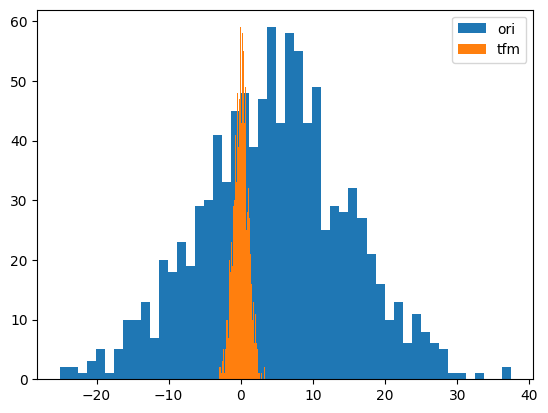
# RobustScaler
y = random_shuffle(np.random.randn(1000) * 10 + 5)
splits = TimeSplitter()(y)
preprocessor = Preprocessor(RobustScaler)
preprocessor.fit(y[splits[0]])
y_tfm = preprocessor.transform(y)
test_close(preprocessor.inverse_transform(y_tfm), y)
plt.hist(y, 50, label='ori',)
plt.hist(y_tfm, 50, label='tfm')
plt.legend(loc='best')
plt.show()
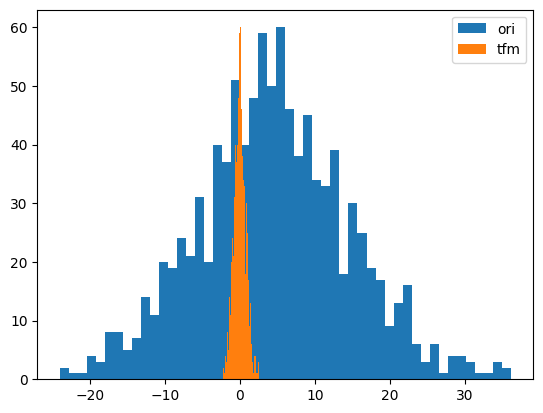
# Normalize
y = random_shuffle(np.random.rand(1000) * 3 + .5)
splits = TimeSplitter()(y)
preprocessor = Preprocessor(Normalizer)
preprocessor.fit(y[splits[0]])
y_tfm = preprocessor.transform(y)
test_close(preprocessor.inverse_transform(y_tfm), y)
plt.hist(y, 50, label='ori',)
plt.hist(y_tfm, 50, label='tfm')
plt.legend(loc='best')
plt.show()
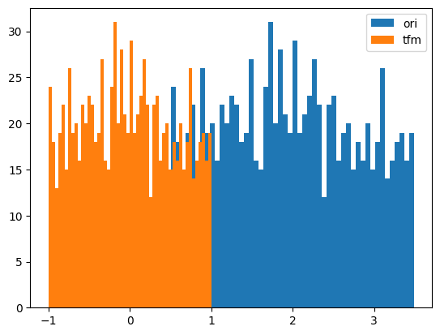
# BoxCox
y = random_shuffle(np.random.rand(1000) * 10 + 5)
splits = TimeSplitter()(y)
preprocessor = Preprocessor(BoxCox)
preprocessor.fit(y[splits[0]])
y_tfm = preprocessor.transform(y)
test_close(preprocessor.inverse_transform(y_tfm), y)
plt.hist(y, 50, label='ori',)
plt.hist(y_tfm, 50, label='tfm')
plt.legend(loc='best')
plt.show()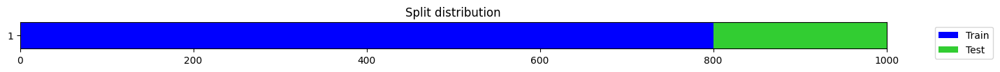
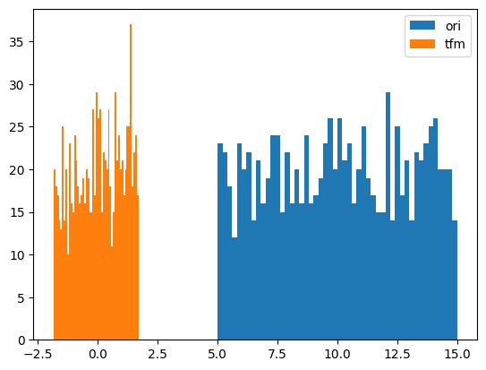
# YeoJohnshon
y = random_shuffle(np.random.randn(1000) * 10 + 5)
y = np.random.beta(.5, .5, size=1000)
splits = TimeSplitter()(y)
preprocessor = Preprocessor(YeoJohnshon)
preprocessor.fit(y[splits[0]])
y_tfm = preprocessor.transform(y)
test_close(preprocessor.inverse_transform(y_tfm), y)
plt.hist(y, 50, label='ori',)
plt.hist(y_tfm, 50, label='tfm')
plt.legend(loc='best')
plt.show()
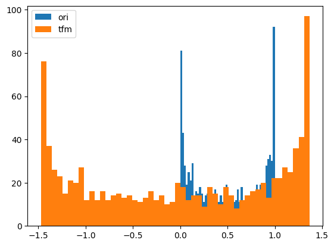
# QuantileTransformer
y = - np.random.beta(1, .5, 10000) * 10
splits = TimeSplitter()(y)
preprocessor = Preprocessor(Quantile)
preprocessor.fit(y[splits[0]])
plt.hist(y, 50, label='ori',)
y_tfm = preprocessor.transform(y)
plt.legend(loc='best')
plt.show()
plt.hist(y_tfm, 50, label='tfm')
plt.legend(loc='best')
plt.show()
test_close(preprocessor.inverse_transform(y_tfm), y, 1e-1)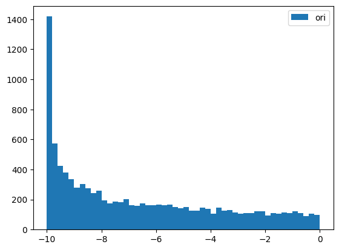
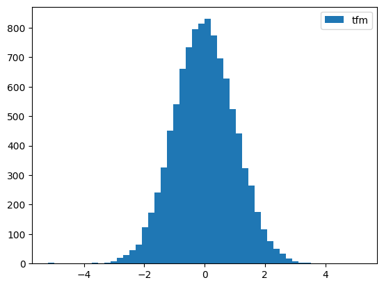
ReLabeler
def ReLabeler(
cm
):
Changes the labels in a dataset based on a dictionary (class mapping) Args: cm = class mapping dictionary
vals = {0:'a', 1:'b', 2:'c', 3:'d', 4:'e'}
y = np.array([vals[i] for i in np.random.randint(0, 5, 20)])
labeler = ReLabeler(dict(a='x', b='x', c='y', d='z', e='z'))
y_new = labeler(y)
test_eq(y.shape, y_new.shape)
y, y_new(array(['d', 'd', 'a', 'd', 'b', 'e', 'a', 'd', 'b', 'c', 'b', 'e', 'b',
'b', 'a', 'e', 'd', 'e', 'c', 'e'], dtype='<U1'),
array(['z', 'z', 'x', 'z', 'x', 'z', 'x', 'z', 'x', 'y', 'x', 'z', 'x',
'x', 'x', 'z', 'z', 'z', 'y', 'z'], dtype='<U1'))